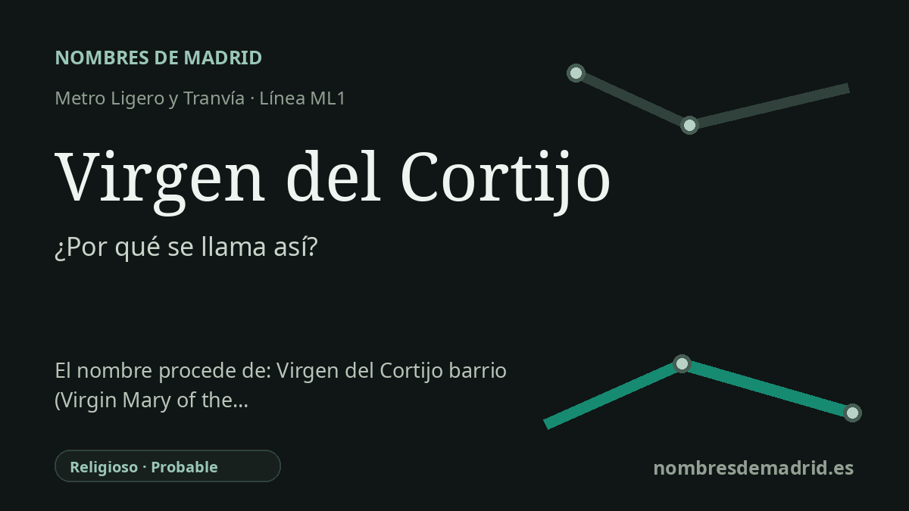

Publicado el · Investigación de Nombres de Madrid · Cómo verificamos cada origen · 9 fuentes consultadas
Respuesta rápida
La estación Virgen del Cortijo lleva el nombre de la cercana Colonia Virgen del Cortijo, en Hortaleza/Valdefuentes. El nombre de la colonia parece proceder de una finca agrícola donde se veneraba una fotografía de la Virgen del Cortijo, advocación mariana vinculada especialmente a La Rioja.
La historia del nombre
La estación Virgen del Cortijo toma su nombre de la Colonia Virgen del Cortijo, el enclave residencial al que da servicio en el norte de Madrid. La documentación oficial de transporte sitúa la parada en la ML1, la línea de metro ligero Pinar de Chamartín-Las Tablas, y las páginas regionales de infraestructuras incluyen Virgen del Cortijo entre las nueve estaciones puestas en servicio con esa línea el 24 de mayo de 2007.
El nombre no es solo una denominación urbana moderna. La nota histórica de la parroquia local afirma que tanto la parroquia como las viviendas se levantaron sobre una extensa finca agrícola ya conocida como Virgen del Cortijo. En esa finca había un caserón para los guardeses de la labranza, y en una habitación se exponía una fotografía deteriorada de la Virgen a la que acudían vecinos para rezar.
Ese relato vincula la devoción madrileña con la Virgen del Cortijo de La Rioja. La nota parroquial identifica la fotografía con la imagen conservada en Murillo del Río Leza, mientras que la imagen actual de la parroquia madrileña sigue la de Soto en Cameros. La página municipal de Soto en Cameros describe la ermita de Nuestra Señora del Cortijo como un santuario antiguo situado en lo alto del pueblo, con fases constructivas medievales y posteriores.
La palabra cortijo ayuda también a entender por qué el nombre encajaba en un paisaje rural. La RAE la define como una finca rústica con vivienda y dependencias, típica de amplias zonas de la España meridional. En el caso madrileño, el término parece haber sobrevivido en el nombre de una finca agrícola concreta antes de que la zona se transformara en vivienda, industria, oficinas e infraestructura de transporte durante la segunda mitad del siglo XX.
Hay buena evidencia para la estación, la colonia, la tradición parroquial y la existencia posterior de planeamiento urbanístico bajo el nombre Plan Parcial de Ordenación "Virgen del Cortijo". La versión popular de que el barrio se trazó a partir de un plan de 1966 y fue desarrollado por Pryconsa es verosímil y está muy repetida, pero el expediente oficial de 1966 no está disponible en línea y ese detalle no puede considerarse plenamente verificado.